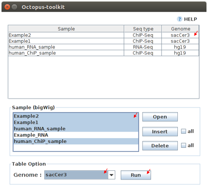

5.User Guide¶
Octopus-toolkit can analyze data already published on NCBI or stored on your computer.
Public data: The NGS data uploaded to NCBI.Private data: The NGS data stored on the user’s computer. (Data obtained through a sequencing machine or downloaded directly in the web)
Also, Octopus-toolkit can analyze further analysis such as Peak Calling, Drawing Graph, and Visualization after analyzing the public data or private data.
The basic analysis of Octopus-toolkit uses public data.
NGS data processing

The analysis using Octopus-toolkit is based on the process from preprocessing to visualization. You can analyze the further analysis after the completion of the visualization process.
5-1.3rd party tools used in Octopus-toolkit¶
Octopus-toolkit uses the following 3rd party tools to analyze NGS data.
| NGS Process | Function | 3rd party tool | Sub-tool |
|---|---|---|---|
Preprocessing |
Download SRA file from NCBI | Aspera |
ascp |
| Convert SRA to Fastq | SRAToolkit |
fastq-dump | |
Quality check |
Quality check for raw data | FastQC |
fastqc |
Trimming |
Trimming for adapter sequence and low-quality reads | Trimmomatic |
|
Alignment |
Indexing a reference genome | Hisat2 |
hisat2-build |
| Mapping the reads to the reference genome | Hisat2 |
hisat2-align | |
Visualization |
Create a visualization file | Homer |
makeTagDirectory,makeUCSCFile,analyzeRepeats |
Peak calling |
Detect mapped read to genome | Homer |
findPeak, pos2bed,annotatePeaks |
Graph |
Calculate the value of bigWig for a specific region | Bwtool |
matrix |
| Draw the heatmap and line plot | R |
pheatmap, ggplot2 | |
IGV |
Use IGV tool for visualization | IGV |
5-2.Public data¶
Quick Start¶
Note
- Enter the GEO accession number or click the open button to load GEO accession number list.
- Click the Run button.
- Choose the option you want to use in the Octopus Option.
- Click the Run button in the Octopus Option.
Work flow¶

Start analyzing public data¶

To analyze the public data, enter the GEO (Gene Expression Omnibus) Accession number or load the GEO Accession number list file.
Input :
GEO Accession numberGSExxx : Each Series(Study) record is assigned a unique and stable GEO accession number. GSMxxx : Each Sample record is assigned a unique and stable GEO accession number.
Input :
GEO Accession number list(example.list)
- Enter the GEO accession number or click the open button to load GEO accession number list.
- Click the Run button.
Octopus option¶
You can use the options provided by Octopus-toolkit as well as the tools used by each process.

| Option | Decription |
|---|---|
Latest genome version |
Use the latest genome. |
Analyze the data in succession |
Skips already analyzed the samples. |
Omit Process |
Omit the selected process. (Trimming and Sort) |
CPU(Thread) |
Set the CPU to use. |
Strand(RNA) |
Set the library strand for RNA-Seq. |
Use the full parameter for each tool |
Use the full parameter. |
Edit Button |
Go to the Full parameter option window. |
Remove Files |
Delete selected files after each process analysis for HDD free space. |
Latest genome version
Octopus-toolkit can analyze for Homo sapiens, Mus musculus, Drosophila melanogaster, Saccharomyces cerevisiae, and Canis lupus familaris.
| Organism | Genome version |
|---|---|
| Homo sapiens | hg38, hg19, hg18 |
| Mus musculus | mm10, mm9 |
| Drosophila melanogaster | dm6, dm3 |
| Saccharomyces cerevisiae | sacCer3 |
| Canis lupus familaris | canFam3 |
The latest genome version uses the latest version of the genome for analysis. If you don’t select this option, Octopus-toolkit uses the following genome version for analysis.
* Latest genome (O) : hg38, mm10, dm6, sacCer3, canFam3
* Latest genome (X) : hg19, mm9, dm3, sacCer3, canFam3
Analyze the data in succession
When analyzing a GSE accession number that has a lot of sample data, you may have to shut down the computer during analysis for a variety of reasons. For example, if you stop analyzing after 8 samples of 10 samples have been analyzed, and later analyze again, you will have to analyze again from the beginning.(First sample)
To solve this issue, Octopus-toolkit saves analysis information of the sample in the log file after the analysis of one sample is completed.
If you select analyze the data in succession, you can skip the already analyzed samples.
If you have already analyzed the sample, but you want to reanalyze it with other options, Don’t select analyze the data in succession.
Omit process
The omit process allows you to skip and analyze the selected process during the entire analysis process. You can shorten the overall analysis time by omitting these processes.
In the trimming process, If all reads have bad quality, there is a possibility that all reads are deleted. Octopus-toolkit will analyze the original raw data(Fastq) when all reads are deleted due to bad quality after trimming.
Also, If all reads are higher than the trimming cutoff (quality, adapt), you can skip to the trimming process.
In the sorting process, The alignment process in Octopus-toolkit provides you with a bam format file and a sorted.bam file that sorts it.
Sorted.bam files can’t be used for visualization , peak calling, and graph function after alignment process. It is used only when confirming the bam file directly via IGV tool. (The IGV process basically uses the bigWig format file, which is the output file of Visualization)
However, the reason for creating sorted.bam file in Octopus-toolkit is that many NGS tools use the sorted.bam file as input for further analysis.
So, If you don’t need a sorted.bam file you can skip this sorting process to save time.
CPU(Thread)
Octopus-toolkit can select the CPU to your computer for analysis. (Default : 8)
Strand(RNA)
Strand is the library’s strand information needed to analyze RNA-Seq data.
Octopus-toolkit extracts information from samples in the GEO dataset when analyzing public data. However, information about strand is not well provided in GEO datasets.
So, when you want to analyze the RNA-Seq data, you can set the strand specific library or non-strand library via this option. (Default : Unstrand)
You can select either non-strand library or the strand-specific library such as FR-Firststrand, FR-Secondstrand using this option.
Use the full parameter for each tool
Use the full parameter for each tool (Checkbox) allows you to select the full option of the tool used in each analysis.
When you select it, the Edit button is enabled. You can go to the Full parameter option window via the Edit button.
Follow the link for full parameter details : Full Parameter
Edit Button
The Edit button will be active when you select Use the full parameter for each tool. If you click the Edit button, the Full parameter optinos window will appear.
Remove Files
The data generated in the NGS analysis process has capacity over KiloByte to GigaByte, and your computer needs a lot of free space to store it. However, all the generated data is not needed for you. The generated data except for the main data for further analysis is deleted after each process by the your selection.
| Option | Extension | Description |
|---|---|---|
SRA |
sra | Compressed raw data downloaded from NCBI. (Sequence Read Archive) |
Fastq |
fastq or fq | Raw data converted during preprocessing. (A short read sequence file) |
Fastqc |
html or text | Output generated during Quality Check. (output of FastQC) |
Trimming |
fastq or fq | Output generated during Trimming. (Trimmed raw file(Fastq)) |
BAM |
bam | Output generated during Alignment. (Mapped read to the genome) |
Sorted_Bam |
bam | Output generated during Sortring. (Sorted mapped read) |
- Choose the option you want to use in the Octopus Option.
- Click the Run button in the Octopus Option.

5-3.Private data¶
Quick Start¶
Note
- Select Analysis -> Private Data in the Menu bar.
- Select the folder where the raw data is stored or select raw data stored in your computer.
- Add information about each sample in the private table.
- Click the Run button in the private table.
- choose the option you want to use in the Octopus option.
- Click the Run button in the Octopus Option.
Start analyzing private data¶

Unlike public data analysis, private data analysis does not download SRA file from NCBI. This analysisonly uses the raw data stored on your computer.
Private data analysis uses the Fastq format file and the gzip-compressed Fastq.gz format file as input.
Note
- Raw data : Sample
.fastqor Sample.fq - compressed Raw data : Sample
.fastq.gzor Sample.fq.gz - Single-End data : Sample
.fastq(or fq, fastq.gz, fq.gz) - Paired-End data : Sample
_1.fastq, Sample_2.fastq
For Paired-End data, distinguish between _1.fastq and _2.fastq in the same sample name.
- To analyze the private data, select
Analysis->Private Datain the menu bar. - Select the
folderwhere the raw data is stored or selectraw datastored in your computer.
Octopus-toolkit examines the selected raw data or folder and selects only the data that matches the input format and outputs it to the private table.
Private table¶

Octopus-toolkit does not know the sample information about your private data. So you need to add information about the samples you want to analyze.
Octopus-toolkit checks the name of the selected raw data to create an initial table. Paired-End data creates a table by separating _1.fastq and _2.fastq format from data of the same name.
If the selected data is not displayed in the table, refer to the data format of the above note and change the data name.
First, select a sample in the table to enter information. Insert information about the selected sample by selecting it from the table option below.
| Option | Decription |
|---|---|
Genome |
Select the sample’s genome. |
Seq type |
Select the sample’s seq type. |
Multi-Lane |
Select samples sequenced by Multi-Lane. |
Strand |
Select the sample’s strand. |
Genome
The available genome in Octopus-toolkit is:
| Species | Genome version |
|---|---|
Homo sapiens |
hg38 (Dec.2013, GRCh38), hg19 (Feb.2009,GRCh37), hg18 (Mar.2006 NCBI36) |
Mus musculus |
mm10 (Dec.2011 GRCm38), mm9 (July.2007 NCBI37) |
Drosophila melanogaster |
dm6 (Aug.2014 BDGP Release 6+ ISO1 MT), dm3 (Apr.2006 BDGP R5) |
Saccharomyces cerevisiae |
sacCer3 (Apr.2011 SacCer_Apr2011) |
Canis lupus familaris |
canFam3 (Sep.2011 Broad CanFam3.1) |
Seq type
Octopus-toolkit can analyze ChIP-Seq, RNA-Seq, MeDIP-Seq, ATAC-Seq, Dnase-Seq and Mnase-Seq.
Multi-Lane
When sequencing through a sequencing machine, Multi-Lane means that raw data is extracted by dividing into several lanes rather than 1 lane.
Most multi-lane data have the following filenames.
Sample.L001.fastq, Sample.L002.fastq, Sample.L003.fastq ... Sample.L008.fastq
To set multi-lane information, all multi-lane sample data should be selected with the same number of multi-lane values.
If you want to know more information, please refer to the tutorial site. Multi-Lane tutorial Link
Strand
The strand provided by Octopus-toolkit is a library strand of two types.
- Non-strand library :
Unstrand(Default) - Strand specific library :
FR-Firststrand,FR-secondstrand
To add this option, the Seq type of the sample to be selected is RNA-Seq.
- Add information about each sample in the private table.
- Click the Run button in the private table.
Octopus option¶
Octopus option is the same as public data analysis. Please refer to public data analysis. (Octopus option)

5-4.Peak Calling¶
Quick Start¶
Note
- Select Analysis -> Peak Calling in the Menu bar.
- Select the resulting folder generated by analyzing public data or private data.
- Add information about each sample in the peak calling table.
- Click the Run button in the peak calling table.
Start analyzing peak calling¶

The peak calling is the process of identifying the region of the mapped read to the genome. Peak calling process of Octopus-toolkit can’t perform RNA-Seq analysis in NGS-Seq.
Peak calling will detect the region of the read mapped on the genome, so you need to complete the alignment process in advance. Therefore, in order to use peak calling, you must complete at least one sample of the data analysis. (Public or Private)
- Select Analysis -> Peak Calling in the Menu bar.
- Select the resulting folder generated by analyzing public data or private data.
Peak calling table¶

The Peak calling table consists of a table that stores sample information, a sample input window, and a table option window.
To use the peak calling, select the sample you want to analyze in the sample window and click the insert button. And then, Add Control and Style information for the selected sample After selecting the inserted sample.
If Control data associated with the sample exist in the analyzed result, Octopus-toolkit will not automatically identify the Control data, so you will need to add Control information for the sample.
Control
To use Input or IgG seqeuencing related to sample, as a control, this option allows you to select Input or IgG sequencing. (Recommended)
Control information can be selected only for the sample included in the resulting folder.
Style
Peak calling process has specific analysis method about seq type of each sample.
| option | Seq type | Description |
|---|---|---|
Transcription Factor |
ChIP-Seq, DNase-Seq | Peak finding for single contact or focal ChIP-Seq experiments or DNase-Seq. |
Histone |
ChIP-Seq | Peak finding for broad regions of enrichment found in ChIP-Seq experiments for various histone marks. |
Groseq |
GRO-Seq | De novo transcript identification from strand specific GRO-Seq. |
DNase |
DNase-Seq | Adjusted parameters for DNase-Seq peak finding. |
mC |
MeDIP-Seq | DNA methylation analysis. |
Please select a style option that meets your analysis needs.
- Add information about each sample in the peak calling table.
- Click the Run button in the peak calling table.
5-5.Graph¶
Quick Start¶
Note
- Select Analysis -> Graph in the Menu bar.
- Select the resulting folder generated by analyzing public data or private data.
- set the TSS region and Bin size in the Graph table.
- Click the Run button in the Graph table.
Start analyzing Graph¶

The Graph process is a step that extracts data for a specific region given by the user in the visualization file (bigWig format) and draws the heatmap and line plot using the extracted values.
Because the graph process uses the bigWig format file to calculate the value for a given region(bed format file) by the user, you must complete the processing of the previous steps for at least one sample.
Previous steps: Public data or Private data analysis -> Peak Calling.
- Select Analysis -> Graph in the Menu bar.
- Select the resulting folder generated by analyzing public data or private data.
Graph table¶

To draw graphs, Octopus-toolkit requires a bigWig format file and a bed format file.
bigWig: Output of the Public data or Private data analysis.bed: Output of the Peak calling.
In the loaded data, bed format file is saved annotation option, and bigWig format file is saved in sample window.
To use Graph, you select a specific region to be analyzed in the annotation information for calculating value. And then, select the sample you want to analyze in the sample window and click the insert button.
Annotation(bed)
The annotation (bed) option can be selected from the Promoter.bed provided by Octopus-toolkit and the bed file analyzed by the user in the peak calling process.
The Table option gives you a choice of additional options to calculate a specific region using the bigWig format file.
TSS Region
This option is used to calculate the distance of a regularly-sized from the locus of the selected annotation file.You can select the distance between upstream and downstream from a specific region. dd The unit for this option is basepair.(BP)

The TSS-regions that the Octopus-toolkit provides to you are 1000,2000,5000 and 10000.
Number of BINs
The region selected in the TSS region option is divided into n bin and the region is averaged. By selecting the Bin value, Octopus-toolkit automatically calculates the size of each region.
If the value of the selected Bin value is large, you can draw a smoother line plot.
The Number of BINs that the Octopus-toolkit provides to you are 50,100 and 200.
- set the TSS region and Bin size in the Graph table.
- Click the Run button in the Graph table.
5-6.Visualization¶
Quick Start¶
Note
- Select Analysis -> IGV in the Menu bar.
- Select the resulting folder generated by analyzing public data or private data.
- In the sample window, select the sample you want to analyze and click insert
- Check that all genomes match in the IGV table.
- If the genomes don’t match, select the genome to be analyzed from the table option.
- Click the Run button.
Start analyzing IGV¶

The IGV function is a process of visualizing analyzed data through IGV, a visualization analysis tool.
IGV uses the bigWig format file of the analyzed sample. Therefore, in order to use IGV function, you must complete at least one sample of the data analysis. (Public or Private)
- Select Analysis -> IGV in the Menu bar.
- Select the resulting folder generated by analyzing public data or private data.
IGV table¶
Genome
Genome information shows the genome of the samples inserted into the IGV table.
First, select the sample to be visualized using IGV and insert it into the IGV table. So, If a different genome is added as shown in the table above, you must select a reference genome among several genomes.
- In the sample window, select the sample you want to analyze and click insert
- Check that all genomes match in the IGV table.
- If the genomes don’t match, select the genome to be analyzed from the table option.
- Click the Run button.
Run¶
- Run screen of IGV.

Unlike other functions in Octopus-toolkit, the IGV tool runs separately from Octopus-toolkit. You can upload more data directly from the IGV, and can set IGV’s options.
5-7.Output¶
The output file generated by each process is shown below.

- In the result folder

| Folder name | Process | File format | Description |
|---|---|---|---|
00_Fastq |
Preprocessing,Trimming | fastq, Trim.fastq |
Save the raw read file and trimmed raw read file. |
00_SRA |
Preprocessing | sra |
Save compressed raw read file downloaded from NCBi |
01_Fastqc |
Quality check | html, txt |
Save the result of the Quality check. |
02_Bam |
Alignment | bam, sorted.bam, bai |
Save the result data of Alignment and sorting. |
03_RNA_RPKM_Count |
Normalization | RPKM, Count |
Save the calculated RPKM and read count for the RNA-Seq data. |
03_Tag |
Visualization | Tag folder |
Save the Tag folders created by Homer tool. |
04_BigWig |
Visualization | bigWig |
Save the result of the Visualization |
05_Analysis |
Peak Calling,Annotation | bed, annotation |
Save the Bed and Annotation files. |
GSE57617.txt |
Preprocessing~Visualization | txt |
Sample.txt is a file that stores the analysis status and information of the data. |
00_Fastq¶
5-8.Full Parameter¶
Full parameter provides options for 3rd party tools for analyzing NGS data in Octopus-toolkit.
The 3rd party tools used in Octopus-toolkit : 3rd party tools
Preprocessing¶
Preprocessing is the process of downloading NGS data from NCBI or converting SRA format file to Fastq format file. The 3rd party tools used in preprocessing are Aspera and SRAToolkit(fastq-dump)
Transfer rate
MAX-RATE: MAX transfer rate (Only Integer)MIN-RATE: MIN transfer rate (Only Integer)Overwrite: Overwrite-Method, Always(Default), Never, Older, DiffConvert Sra to Fastq (Filtering)
MIN-Read Length: Filter by sequence length >= <Value> (Only Integer)Aligned or unaligned reads: Dump only aligned sequence or unaligned sequences, NotUse(Default), Both, Aligned, UnalignedQuality conversion(offset) : Offset to use for quality conversion, 33(Default), 64Dump biological reads(Only): Dump only biological reads, No(Default)
QC & Trimming¶
QC & Trimming is the process of measuring the quality of the reads and trimming the adapter sequence and low-quality reads. The 3rd party tools used in QC & Trimming are FastQC and Trimmomatic.
Determined quality of DNA Sequence
K-Mer: Specifies the length of Kmer to look for in the Kmer content module, Specified Kmer length must be between 2 and 10. Default length is 7 if not specified.Allocated memory: Set the momory available on your computer for Quality check. Provides a measure of currently available memory . (Octopus-toolkit option)Trimmed DNA sequence data
Illumina adapt Sequence: Cut adapter and other illumina-specific sequences from the read.Seed mismatches: Specifies the maximum mismatch count which will still allow a full match to be performedPalindrome clip threshold: Specifies how accurate the match between the two ‘adapter ligated’ reads must be for PE palindrome read alignment.Simple clip threshold: Specifies how accurate the match between any adapter etc. sequence must be against a read.Window size: specifies the number of bases to average acrossAverage quality: Specifies the average quality required.LEADING: Specifies the minimum quality required to keep a base.TRAILING: Specifies the minimum quality required to keep a base.HEADCROP: The number of bases to keep, from the start of the read.TAILCROP: The number of bases to remove from the start of the read.Minimum length of reads to be kept: Specifies the minimum length of reads to be kept.
Alignment¶
Alignment is the process of mapping reads to the reference genome. The 3rd party tool used in Alignment is Hisat2.
Input
Skip N read: Skip the first <int> reads/pairs in the input (none)Stop after aligning N reads: Stop after first <int> reads/pairs (no limit)Trim N bases 5' end: Trim <int> bases from 5’/left end of reads (0)Trim N bases 3' end: Trim <int> bases from 3’/right end of reads (0)Scoring
Ambiguous read penalty: Penalty for non-A/C/G/Ts in read/refMismatch penalty: Max and min penalties for mismatch; lower qual = lower penalty <2,6>Soft-Clipping penalty: Max and min penalties for soft-clipping; lower qual = lower penalty <1,2>Read gap penalty: Read gap open, extend penalties (5,3)Reference gap penalty: Reference gap open, extend penalties (5,3)Alignment
Ignore all quality values: Treat all quality values as 30 on Phred scale (no)Do not align reverse of read: Do not align forward (original) version of read (no)Do not align forward of read: Do not align reverse-complement version of read (no)Spliced alignment
Do not spliced alignment: Disable spliced alignmentCanonical: Penalty for a canonical splice site (0)Non-canonical: Penalty for a non-canonical splice site (12)MIN-Length: Minimum intron length (20)MAX-Length: Maximum intron length (500000)
Visualization-TagDirectory¶
To analyze data using Homer, you need to make all useful information about the sample into the Tag directory. Visualization-TagDirectory is the process of creating this Tag Directory. The 3rd party tool used in TagDirectory is Homer.
Create tag directory
Fragment-Length: (Set estimated fragment length - given: use read lengths), By default treats the sample as a single read ChIP-Seq experimentMaximum tags per bp: Maximum tags per bp, default: no maximumFlip the strands of each read: Flip strand of each read, i.e. might want to use with some RNA-seqLength of the read to keep: Filter reads with lengths outside this range
Visualization-MakeBigWig¶
MakeBigWig is the process of creating bigWig format file which is Visualization file using TagDirectory. The 3rd party tool used in MakeBigWig is Homer.
Make visualization data
Size of the bigWig files: Size of file, when gzipped, default: 1e10, i.e. no reductionFragment Length: Approximate fragment length, default: autoResolution: Resolution, in bp, of file, default: 1,avgreport average coverage if resolution is larger than 1bp, default: max is reportedTags per bp to count: Minimum and maximum tags per bp to count, default: no limitPlot negative values: Plot negative values, i.e. for - strand transcriptionNormalization
Normalize the total number of reads: Total number of tags to normalize experiment to, default: 1e7Set the standard length: Expected length of fragment to normalize to [0=off], default: 100
PeakCalling-ChIP-Seq/Histone¶
PeakCalling is the process of detecting the region of the mapped read to the genome. The 3rd party tool used in PeakCalling is Homer.
ChIP-Seq/Histone
Peak size: Peak size, default: 0MIN-Distance: Minimum distance between peaks, default: 0 (peak size x2)Genome Size: Set effective mappable genome size, default: 2e9Fragment Length: Approximate fragment length, default: autoInput Fragment Length: Approximate fragment length of input tags, default: autoTag: Maximum tags per bp to count, 0 = no limit, default: autoInput tag: Maximum tags per bp to count in input, 0 = no limit, default: autoTag count to normalize: Tag count to normalize to, default 10000000Region Resolution: Extends start/stop coordinates to cover full region considered “enriched” (YES),Resolutionnumber of fractions peaks are divided in when extending ‘regions’, def: 4
PeakCalling-Peak Filter¶
Peak Filter
Fold Enrichment(Input): Fold enrichment over input tag count, default: 4.0Poisson p-value threshold(Input): Poisson p-value threshold relative to input tag count, default: 0.0001Fold Enrichment(Local): Fold enrichment over local tag count, default: 4.0Poisson p-value threshold(Local): Poisson p-value threshold relative to local tag count, default: 0.0001Fold Enrichment(Unique Tag): Fold enrichment limit of expected unique tag positions, default: 2.0Local Size(Local tag): Region to check for local tag enrichment, default: 10000Input Size(Input tag): Size of region to search for control tags, default: 0`False Discovery Rate: False discovery rate, default = 0.001Poisson p-value cutoff: Set poisson p-value cutoff, default: 0.001Set # of tags: Set # of tags to define a peak, default: 25Set # of normalized tags: Set # of normalized tags to define a peak, by default uses 1e7 for norm
PeakCalling-Other analysis¶
MethylC-Seq/BS-Seq
Find Region: Find unmethylated/methylated regions, default: -unmethyCMethyl Threshold: Methylation threshold of regions, default: avg methylation/2Min cytosine per Methyl: Minimum number of cytosines per methylation peak, default: 6Gro-Seq
TSS Size: Size of region for initiation detection/artifact size, default: 250Min-body Size: Size of regoin for transcript body detection, default: 1000TSS-fold enrichment: Fold enrichment for new initiation dectection, default: 4.0Body-fold enrichment: Fold enrichment for new transcript dectection, default: 4.0End-fold enrichment: End transcript when levels are this much less than the start, default: 10.0Fragment Length: Approximate fragment length, default: 150Confidence P-value: Confidence p-value: 1.00e-05Pseudo Tag Count: Pseudo tag count, default: 2.0Minimum initial read depth: Minimum initial read depth for transcripts, default: auto